TensorFlow Quantum: 混合量子-經典機器學習 *¶
我們身邊的經典計算機利用比特位和邏輯門進行二進制運算。在物理硬件上，這種運算主要是通過半導體的特殊導電性質實現的。經過幾十年的發展，我們已經可以在一片小小的半導體芯片上集成上億個晶體管，從而實現高性能的經典計算。
而量子計算（Quantum Computing）旨在利用具有量子特性（例如量子態疊加和量子糾纏）的「量子比特位」和「量子邏輯門」進行計算。這種新的計算模式可以在搜索和大數分解等重要領域達成指數級的加速，讓當前無法實現的一些超大規模運算成爲可能，從而可能在未來深遠地改變世界。在物理硬件上，這類量子運算也可以通過一些具有量子特性的結構（例如超導約瑟夫森結）實現。
不幸的是，儘管量子計算的理論已經有了比較深入的發展，可在物理硬件上，我們目前仍然造不出一台超越經典計算機的通用量子計算機 1 。IBM和谷歌等業界巨頭在通用量子計算機的物理構建上已經取得了一些成績，但無論是量子比特的個數還是在退相干問題的解決上，都還遠無法達到實用的層級。
以上是量子計算的基本背景，接下來我們討論量子機器學習。量子機器學習的一種最直接的思路是使用量子計算加速傳統的機器學習任務，例如量子版本的PCA、SVM和K-Means算法，然而這些算法目前都尚未達到可實用的程度。我們在本章討論的量子機器學習則採用另一種思路，即構建參數化的量子線路（Parameterized Quantum Circuits, PQCs）。PQC可以作爲深度學習模型中的層而被使用，如果我們在普通深度學習模型的基礎上加入PQC，即稱爲混合量子-經典機器學習（Hybrid Quantum-Classical Machine Learning）。這種混合模型尤其適合於量子數據集（Quantum Data）上的任務。而TensorFlow Quantum正是幫助我們構建這種混合量子-經典機器學習模型的利器。接下來，我們會對量子計算的若干基本概念進行簡介，然後介紹使用TensorFlow Quantum和谷歌的量子計算庫Cirq構建PQC、將PQC嵌入Keras模型、並在量子數據集上訓練混合模型的流程。
量子計算基本概念¶
本節將簡述量子計算的一些基本概念，包括量子比特、量子門、量子線路等。
推薦閱讀
如果你希望更深入地了解量子力學以及量子計算的基本原理，建議可以從以下兩本書入手：
吳飈 ，簡明量子力學（簡潔明快的量子力學入門教程，即將由北京大學出版社出版，可先行閱讀在線版本 http://www.phy.pku.edu.cn/~wubiao/pop_qm_pkupress.pdf ）
Hidary, Jack D. Quantum Computing: An Applied Approach . Cham: Springer International Publishing, 2019. https://doi.org/10.1007/978-3-030-23922-0. （注重代碼實操的量子計算教程，GitHub上有配套源碼： https://github.com/JackHidary/quantumcomputingbook ）
量子比特¶
在二進制的經典計算機中，我們用比特（Bit，也稱「位」）作爲信息存儲的基本單位，一個比特只有0或者1兩種狀態。而在量子計算機中，我們使用量子比特（Quantum Bit, Qubit，也稱「量子位」）進行信息的表示。量子比特也有兩種基本狀態  和
和  。不過量子比特除了可以處於這兩種基本狀態以外，還可以處於兩者之間的疊加態（Superposition State），即
。不過量子比特除了可以處於這兩種基本狀態以外，還可以處於兩者之間的疊加態（Superposition State），即  （其中a和b是複數，
（其中a和b是複數，  ）。例如，
）。例如，  和
和  都是合法的量子態。我們也可以使用向量化的語言來表示量子比特的狀態。如果我們令 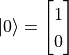 、 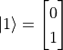，則
都是合法的量子態。我們也可以使用向量化的語言來表示量子比特的狀態。如果我們令 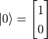 、 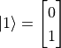，則  、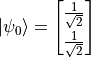、
、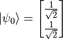、 。
。
同時，我們可以用布洛赫球面（Bloch Sphere）來形象地展示單個量子比特的狀態。球面的最頂端爲 ，最底端爲 ，而從原點到球面上任何一點的單位向量都可以是一個量子比特的狀態。

布洛赫球面（ Bloch Sphere ）。其中Z軸正負方向的量子態分別爲基本態 和 ，X軸正負方向的量子態分別爲 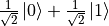 和 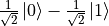 ，Y軸正負方向的量子態分別爲 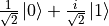 和  。圖示來源¶
。圖示來源¶
{kind=link}
值得特別注意的是，儘管量子比特 可能的狀態相當之多，但一旦我們對其進行觀測，則其狀態會立即坍縮 2 到 和 這兩個基本狀態中的一個，其概率分別爲  和
和  。
。
量子邏輯門¶
在二進制的經典計算機中，我們有AND（與）、OR（或）、NOT（非）等邏輯門，對輸入的比特狀態進行變換並輸出。在量子計算機中，我們同樣有量子邏輯門（Quantum Logic Gate，或簡稱「量子門」），對量子狀態進行變換並輸出。如果我們使用向量化的語言來表述量子狀態，則量子邏輯門可以看作是一個對狀態向量進行變換的矩陣。
例如，量子非門可以表述爲 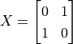 ，於是當我們將量子非門作用於基本態 時，我們得到 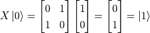。量子門也可以作用在疊加態，例如 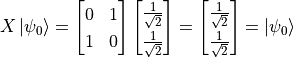 （這說明量子非門沒能改變量子態 的狀態。事實上，量子非門  相當於在布洛赫球面上將量子態繞X軸旋轉180度。而
相當於在布洛赫球面上將量子態繞X軸旋轉180度。而  就在X軸上，所以沒有變化）。量子與門和或門 3 由於涉及到多個量子位而稍顯複雜，但同樣可以通過尺寸更大的矩陣實現。
就在X軸上，所以沒有變化）。量子與門和或門 3 由於涉及到多個量子位而稍顯複雜，但同樣可以通過尺寸更大的矩陣實現。
可能有些讀者已經想到了，既然單個量子比特的狀態不止 和 兩種，那麼量子邏輯門作爲作爲對量子比特的變換，其實也完全可以不局限於與或非。事實上，只要滿足一定條件的矩陣 4 都可以作爲量子邏輯門。例如，將量子態在布洛赫球面上繞X、Y、Z軸旋轉的變換  、
、 、
、 （其中
（其中  是旋轉角度，當
是旋轉角度，當  時記爲 、
時記爲 、 、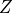 ）都是量子邏輯門。另外，有一個量子邏輯門「阿達馬門」（Hadamard Gate）
、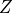 ）都是量子邏輯門。另外，有一個量子邏輯門「阿達馬門」（Hadamard Gate）  可以將量子狀態從基本態轉換爲疊加態，在很多量子計算的場景中占據了重要地位。
可以將量子狀態從基本態轉換爲疊加態，在很多量子計算的場景中占據了重要地位。
量子線路¶
當我們將量子比特以及量子邏輯門按順序標記在一條或多條平行的線條上時，就構成了量子線路（Quantum Circuit，或稱量子電路）。例如，對於我們在上一節討論的，使用量子非門 對基本態 進行變換的過程，我們可以寫出量子線路如下：

一個簡單的量子線路¶
在量子線路中，每條橫線代表一個量子比特。上圖中最左邊的 代表量子比特的初始態。中間的X方塊代表量子非門 ，最右邊的錶盤符號代表測量操作。這個線路的意義是「對初始狀態爲 的量子比特執行量子非門 操作，並測量變換後的量子比特狀態」。根據我們在前節的討論，變換後的量子比特狀態爲基本態 ，因此我們可以期待該量子線路最後的測量結果始終爲1。
接下來，我們考慮將上圖中量子線路的量子非門 換爲阿達馬門  ：
：

將量子非門 換爲阿達馬門 後的量子線路¶
阿達馬門對應的矩陣表示爲 ，於是我們可以計算出變換後的量子態爲  。這是一個 和 的疊加態，在觀測後會坍縮到基本態，其概率分別爲
。這是一個 和 的疊加態，在觀測後會坍縮到基本態，其概率分別爲  。也就是說，這個量子線路的觀測結果類似於扔硬幣。假若觀測20次，則大約10次的結果是 ，10次的結果是 。
。也就是說，這個量子線路的觀測結果類似於扔硬幣。假若觀測20次，則大約10次的結果是 ，10次的結果是 。
實例：使用Cirq建立簡單的量子線路¶
Cirq 是谷歌主導的開源量子計算庫，可以幫助我們方便地建立量子線路並模擬測量結果（我們在下一節介紹TensorFlow Quantum的時候還會用到它）。Cirq是一個Python庫，可以使用 pip install cirq 進行安裝。以下代碼實現了上節所建立的兩個簡單的量子線路，並分別進行了20次的模擬測量。
import cirq
q = cirq.LineQubit(0) # 实例化一个量子比特
simulator = cirq.Simulator() # 实例化一个模拟器
X_circuit = cirq.Circuit( # 建立一个包含量子非门和测量的量子线路
cirq.X(q),
cirq.measure(q)
)
print(X_circuit) # 在终端可视化输出量子线路
# 使用模拟器对该量子线路进行20次的模拟测量
result = simulator.run(X_circuit, repetitions=20)
print(result) # 输出模拟测量结果
H_circuit = cirq.Circuit( # 建立一个包含阿达马门和测量的量子线路
cirq.H(q),
cirq.measure(q)
)
print(H_circuit)
result = simulator.run(H_circuit, repetitions=20)
print(result)
結果如下：
0: ───X───M───
0=11111111111111111111
0: ───H───M───
0=00100111001111101100
可見第一個量子線路的測量結果始終爲1，第二個量子態的20次測量結果中有9次是0，11次是1（如果你多運行幾次，會發現0和1出現的概率趨近於  ）。可見結果符合我們在上節中的分析。
）。可見結果符合我們在上節中的分析。
混合量子-經典機器學習¶
本節介紹混合量子-經典機器學習的基本概念，以及使用 TensorFlow Quantum 建立此類模型的方法。
在混合量子-經典機器學習過程中，我們使用量子數據集訓練混合量子-經典模型。混合量子-經典模型的前半部分是量子模型（即參數化的量子線路）。量子模型接受量子數據集作爲輸入，對輸入使用量子門進行變換，然後通過測量轉換爲經典數據。測量後的經典數據輸入經典模型，並使用常規的損失函數計算模型的損失值。最後，基於損失函數的值計算模型參數的梯度並更新模型參數。這一過程不僅包括經典模型的參數，也包括量子模型的參數。具體流程如下圖所示。

經典機器學習（上圖）與混合量子-經典機器學習（下圖）的流程對比¶
TensorFlow Quantum 即是一個與 TensorFlow Keras 結合緊密的，可快速建立混合量子-經典機器學習模型的開源庫，可以使用 pip install tensorflow-quantum 進行安裝。
後文示例均默認使用以下代碼導入 TensorFlow、TensorFlow Quantum和Cirq：
import tensorflow as tf
import tensorflow_quantum as tfq
import cirq
推薦閱讀
Broughton, Michael, Guillaume Verdon, Trevor McCourt, Antonio J. Martinez, Jae Hyeon Yoo, Sergei V. Isakov, Philip Massey, et al. 「 TensorFlow Quantum: A Software Framework for Quantum Machine Learning. 」 ArXiv:2003.02989 [Cond-Mat, Physics:Quant-Ph], March 5, 2020. （TensorFlow Quantum 白皮書）
量子數據集與帶參數的量子門¶
以有監督學習爲例，經典數據集由經典數據和標籤組成。經典數據中的每一項是一個由不同特徵組成的向量。我們可以將經典數據集寫作  ，其中
，其中  。量子數據集同樣由數據和標籤組成，而數據中的每一項是一個量子態。以前節單量子比特的量子態爲例，我們可以將每一項數據寫作
。量子數據集同樣由數據和標籤組成，而數據中的每一項是一個量子態。以前節單量子比特的量子態爲例，我們可以將每一項數據寫作  。在具體實現上，我們可以通過量子線路來生成量子數據。也就是說，每一項數據
。在具體實現上，我們可以通過量子線路來生成量子數據。也就是說，每一項數據  都對應着一個量子線路。例如，我們可以通過以下代碼，使用Cirq生成一組量子數據：
都對應着一個量子線路。例如，我們可以通過以下代碼，使用Cirq生成一組量子數據：
q = cirq.GridQubit(0, 0)
q_data = []
for i in range(100):
x_i = cirq.Circuit(
cirq.rx(np.random.rand() * np.pi)(q)
)
q_data.append(x_i)
在這一過程中，我們使用了一個帶參數的量子門 cirq.rx(angle)(q) 。和之前我們使用的量子門 cirq.X(q) , cirq.H(q) 不同的是，這個量子門多了一個參數 angle ，表示將量子比特 q 繞布洛赫球面的x軸旋轉 angle 角度（弧度制）。以上代碼生成了100項量子數據，每項數據是從基本態 開始繞布洛赫球面的x軸隨機旋轉 ![[0, \pi]](../../_images/math/b61438f8e15d426e93bf63b6c39c296435cdacaf.png) 弧度所變換而來的量子態。量子數據集在不少量子相關的領域（如化學、材料科學、生物學和藥物發現等）都有應用。
弧度所變換而來的量子態。量子數據集在不少量子相關的領域（如化學、材料科學、生物學和藥物發現等）都有應用。
當我們要將量子數據集作爲Keras的輸入時，可以使用TensorFlow Quantum的 convert_to_tensor 方法，將量子數據集轉換爲張量：
q_data = tfq.convert_to_tensor(q_data)
值得注意的是，當使用量子數據集作爲Keras模型的訓練數據時，Keras模型的輸入類型（ dtype ）需要爲 tf.dtypes.string 。
參數化的量子線路（PQC）¶
當我們在建立量子線路時使用了帶參數的量子門，且該參數可以自由調整時，我們就稱這樣的量子線路爲參數化的量子線路。Cirq支持結合SymPy這一Python下的符號運算庫實現參數化的量子線路，示例如下
import sympy
theta = sympy.Symbol('theta')
q_model = cirq.Circuit(cirq.rx(theta)(q))
在上面的代碼中，我們建立了如下圖所示的量子線路。該量子線路可以將任意輸入量子態  繞布洛赫球面的x軸逆時針旋轉 度，其中 是使用
繞布洛赫球面的x軸逆時針旋轉 度，其中 是使用 sympy.Symbol 聲明的符號變量（即參數）。

參數化的量子線路示例¶
將參數化的量子線路嵌入機器學習模型¶
通過TensorFlow Quantum，我們可以輕鬆地將參數化的量子線路以Keras層的方式嵌入Keras模型。例如對於前節建立的參數化的量子線路 q_model ，我們可以使用 tfq.layers.PQC 將其直接作爲一個Keras層使用
q_layer = tfq.layers.PQC(q_model, cirq.Z(q))
expectation_output = q_layer(q_data_input)
tfq.layers.PQC 的第一個參數爲使用Cirq建立的參數化的量子線路，第二個參數爲測量方式，此處使用 cirq.Z(q) 在布洛赫球面的Z軸進行測量。
以上代碼也可直接寫作：
expectation_output = tfq.layers.PQC(q_model, cirq.Z(q))(q_data_input)
實例：對量子數據集進行二分類¶
在以下代碼中，我們首先建立了一個量子數據集，其中一半的數據項爲基本態 繞布洛赫球面的x軸逆時針旋轉 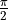 弧度（即 ），另一半則爲 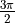 弧度（即 ）。所有的數據均加入了繞x,y軸方向旋轉的，標準差爲  的高斯噪聲。對於這個量子數據集，如果不加變換而直接測量，則所有數據都會和拋硬幣一樣等概率隨機坍縮到基本態 和 ，從而無法區分。
的高斯噪聲。對於這個量子數據集，如果不加變換而直接測量，則所有數據都會和拋硬幣一樣等概率隨機坍縮到基本態 和 ，從而無法區分。
爲了區分這兩類數據，我們接下來建立了一個量子模型，這個模型將單比特量子態繞布洛赫球面的x軸逆時針旋轉 弧度。變換過後量子態數據的測量值送入「全連接層+softmax」的經典機器學習模型，並使用交叉熵作爲損失函數。模型訓練過程會自動同時調整量子模型中 的值和全連接層的權值，使得整個混合量子-經典機器學習模型的準確度較高。
import cirq
import sympy
import numpy as np
import tensorflow as tf
import tensorflow_quantum as tfq
q = cirq.GridQubit(0, 0)
# 准备量子数据集(q_data, label)
add_noise = lambda x: x + np.random.normal(0, 0.25 * np.pi)
q_data = tfq.convert_to_tensor(
[cirq.Circuit(
cirq.rx(add_noise(0.5 * np.pi))(q),
cirq.ry(add_noise(0))(q)
) for _ in range(100)] +
[cirq.Circuit(
cirq.rx(add_noise(1.5 * np.pi))(q),
cirq.ry(add_noise(0))(q)
) for _ in range(100)]
)
label = np.array([0] * 100 + [1] * 100)
# 建立参数化的量子线路（PQC）
theta = sympy.Symbol('theta')
q_model = cirq.Circuit(cirq.rx(theta)(q))
# 建立量子层和经典全连接层
q_layer = tfq.layers.PQC(q_model, cirq.Z(q))
dense_layer = tf.keras.layers.Dense(2, activation=tf.keras.activations.softmax)
# 使用Keras建立训练流程。量子数据首先通过PQC，然后通过经典的全连接模型
q_data_input = tf.keras.Input(shape=() ,dtype=tf.dtypes.string)
expectation_output = q_layer(q_data_input)
classifier_output = dense_layer(expectation_output)
model = tf.keras.Model(inputs=q_data_input, outputs=classifier_output)
# 编译模型，指定优化器、损失函数和评估指标，并进行训练
model.compile(
optimizer=tf.keras.optimizers.SGD(learning_rate=0.01),
loss=tf.keras.losses.sparse_categorical_crossentropy,
metrics=[tf.keras.metrics.sparse_categorical_accuracy]
)
model.fit(x=q_data, y=label, epochs=200)
# 输出量子层参数（即theta）的训练结果
print(q_layer.get_weights())
輸出：
...
200/200 [==============================] - 0s 165us/sample - loss: 0.1586 - sparse_categorical_accuracy: 0.9500
[array([-1.5279944], dtype=float32)]
可見，通過訓練，模型在訓練集上可以達到95%的準確率， 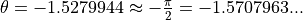 。而當  時，恰好可以使得兩種類型的數據分別接近基本態 和 ，從而達到最易區分的狀態。
時，恰好可以使得兩種類型的數據分別接近基本態 和 ，從而達到最易區分的狀態。